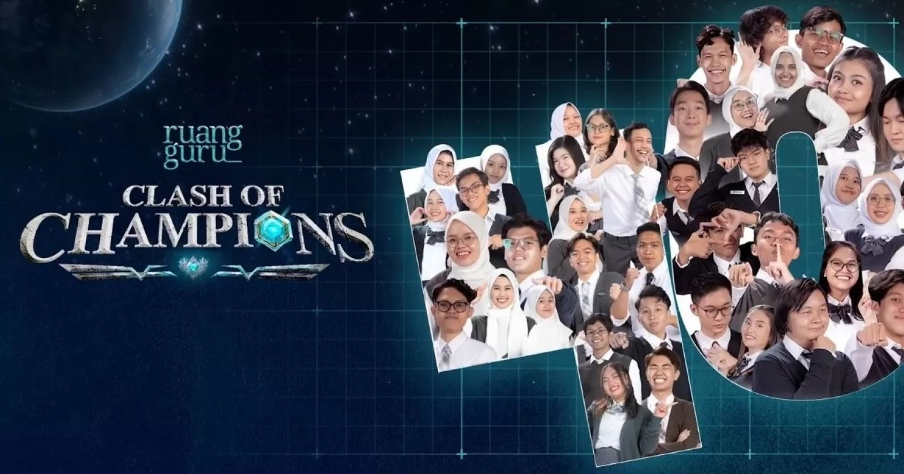

Clash of Champions juga dikenal oleh netizen dengan sebutan University War Indonesia. Program ini merupakan sebuah kompetisi cerdas yang mempertemukan para mahasiswa terbaik dari berbagai universitas ternama di Tanah Air. Ini bisa berdampak positif kepada masyarakat Indonesia yang dapat terinspirasi. Dan ini merupakan konten yang sangat menarik dan edukatif. Kompetisi ini tidak hanya menonjolkan kemampuan akademik para peserta, tetapi juga menguji keterampilan berpikir kritis, kerjasama tim, dan kreativitas dalam menyelesaikan masalah. Dengan menampilkan berbagai tantangan dan pertanyaan yang kompleks, program ini memberikan gambaran tentang bagaimana mahasiswa Indonesia mampu bersaing di tingkat nasional dan internasional. Lebih dari sekadar ajang adu kecerdasan, University War Indonesia juga menjadi platform untuk menunjukkan inovasi dan ide-ide segar dari generasi muda. Penonton dapat melihat bagaimana para mahasiswa ini merumuskan solusi untuk berbagai isu, mulai dari teknologi, sains, ekonomi, hingga masalah sosial. Hal ini tentunya bisa menjadi inspirasi bagi para penonton, khususnya para pelajar, untuk lebih giat belajar dan mengembangkan diri. Selain itu, program ini juga mempromosikan semangat sportivitas dan fair play di kalangan mahasiswa. Kompetisi yang sehat dan bersahabat ini diharapkan dapat membangun hubungan yang baik antar universitas dan mendorong kolaborasi di masa depan. Dengan demikian, University War Indonesia tidak hanya menjadi ajang perlombaan, tetapi juga sebuah wadah untuk mempererat tali persaudaraan dan kerja sama antar generasi muda bangsa. Secara keseluruhan, Clash of Champions atau University War Indonesia adalah program yang kaya akan nilai edukatif, inspiratif, dan rekreatif, yang diharapkan dapat terus berlanjut dan menjadi bagian dari upaya meningkatkan kualitas pendidikan dan sumber daya manusia di Indonesia.
Clash of Champions by Ruang Guru
By 10 Juli 2024
